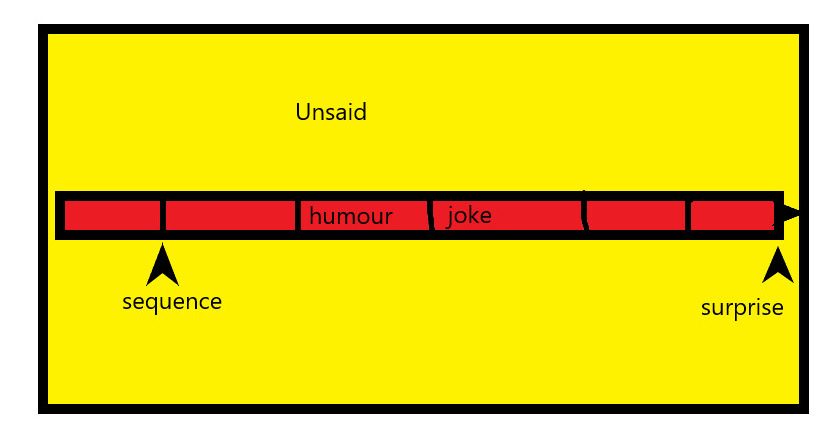

How Humour Works
This is about humour. I shall not make any clear distinction between humour in general and jokes, only to say that jokes are archly and tightly structured set pieces and a subgroup within humour.
The best way to understand humour perhaps is to look at why analysing or explaining particular cases of humour kills the humour stone dead. It is well known that analysis (using that to cover explanation) of how a piece of humour works kills it. Just as taking apart a portable radio makes it cease to work as a radio, though all the bits are still there – they are not assembled. There is nothing less funny than talking about why something is funny. What is less obvious is that this gives us a key to understanding humour.
The main idea is this. Looking at what is taken away by analysing or explaining (informally called ‘picking it apart’ or ‘spelling it out’) a case of humour, thereby killing it, we can infer that these elements are what keeps it alive. What is taken away through analysis and kills humour gives us an insight into what makes the humour work.

Analysis takes away three things that are essential to humour working. These are: surprise, the unsaid, and sequence. All these elements are interconnected, but take away any one of them and the humour is stone dead. Together these give the form of humour, though not its content. This applies as well to verbal humour as to visual humour.
Analysis destroys all these features of humour or a joke, and as it destroys the humour itself, its being funny, this thereby shows us the features of humour that make it work. Take these features away and the humour dies, so having them present is what make it live. It is at least part of the story of what does so.

The limits of language are all there before us in the everyday. For there is no description or account of the wind on your face (nor of the experience of seeing a red rose) that could give you any idea at all what the wind on your face was like to have.
So in turn. A piece of humour or joke leads to a surprise. But we are deliberately misled in the construction of the humour in such a way that intentionally, or at least unaccidentally, it sets our mind working in a certain direction as to where we are going, then suddenly at the end we are turned on our head. People are sometimes offended by humour partly because they feel they have been tricked into a ride to somewhere they did not want to go. The misleading is done not just by what is said, but by what is deliberately unsaid, that is, not just anything left unsaid, but certain specific things that might have been said. For if the unsaid had been said, or said in a different way, there would be no surprise at the end. To this end it is important that the stretch of the humour is presented in a certain sequence – disrupt the sequential order, and again the piece of humour dies on its feet. Analysis undoes all these features of a piece of humour that need to be left done. Viewed externally as a whole, humour tends to consist of something bounded and circumscribed, but not isolated, and so yet set in a worldly context.
So here is a diagram to clarify the general nature of humour, which I shall call the Humour Box.

The rest of the way the humour works is not owing to its form but to its content combined with the sensibilities and tastes of the individual exposed to the humour, and in addition often a certain context of its happening. The context may act as an ingredient or spice giving extra flavour.
There is no point in saying that such and such a case of humour is not really funny if someone finds it funny but you do not. For here we are in the realms of taste, and there can be no genuine disagreements about taste. Just as it would be meaningless to say that marmite or beer does not really taste nice because you happen not to find it so, even though others like it. Contrariwise, there is no point in telling someone that something you find funny really is funny when they do not. At which point you might be tempted to do the most counterproductive thing you can and analyse and explain the humour – sure death for it. What people find funny and what tastes nice is what people find funny and what they find tastes nice, and that is all that can be said, there is no ‘really’ to be added. It explains why people say to others, if they like something, or in this case find something funny: ‘you’ve got to laugh’. And then they are rather crest fallen when others do not share their amusement. Like someone saying, ‘this beer tastes superb’, and you give them a sip and they go ‘yuk, it’s horrible’. Taste may vary somewhat over one’s life.
As with other cases of killing things, once done there is likely no way of restoring the humour back to life. But one has a little more leeway with humour than living organisms. If one found it funny before the analysis, and one engages in a little forgetfulness, it just might be possible to breathe life back into the corpse of what was once funny.
Your ad-blocker ate the form? Just click here to subscribe!
It might be thought that I am suggesting that to appreciate humour one must be unthinking, be in some way totally instinctive in one’s understanding of an instance of humour. But this would only be so if thinking, and moreover understanding, had to be identical with analysis. But this is clearly false. I can clearly understand that an elephant is running at me that is about to flatten me without analysing what is happening. I can think while listening to a symphony, understand and appreciate it, without breaking all down into its interconnected parts in an analysis.
Humour too is understood gestalt – but gestalt understanding is not thoughtless. ‘Gestalt’ here means: an organised whole that is perceived in one mental act as more than the sum of its parts. This easily connects with why we sometimes find something funny, as is said, despite ourselves, for the humour is presented and part us finds it funny before we have a chance to do any chopping up analysis, which might have alerted us to its being not our kind of thing because of something we find offensive in it.
In addition, it may be said that this kind of gestalt understanding is a highly developed form of intelligence, where one simply sees what is the case without resorting to reconstruction after analysis. It is no wonder tyrants fear humour so much. This kind of gestalt intelligence appears elsewhere. But it’s hard by its nature to test and appreciate. We see this gestalt intelligence in hands-on practical jobs where material problems arise. It is there in games such as chess. Indeed, it is at the heart of the human condition, of what it means to be human, as we see what we want in life, and who we love, who we see as our friends, and conversely who we should fear and see as a menace. If someone asks you if love them, the last thing they want to have is you standing there saying ‘hang on a moment, I’ll just work that out’; and if you feel you have to do that you have probably got you answer in the negative straight up. Yet it would be clearly wrong to say that loving someone (or thinking of them as a friend) is unthinking. What is common is the lack of need, indeed desirability, of analytical construction, taking us to what we simply see. Such a process moreover may be in principle impossible, or at least tediously difficult, and unnecessary.
I want to make a distinction between analysing or explaining something and getting someone to see it. Going back to the earlier analogies, it amounts to the difference between taking the radio apart and explaining what all the bits do, and showing someone where the on-off switch and the volume control are, and shouting ‘look out, an elephant!’. You are not analysing or explaining the totality, but rather getting someone to see something that they then just see.

Seemingly intractable paradoxes involved in speaking of the ineffable are based on a mistake.
I claim only to have provided the necessary but not the sufficient condition for humour, for there are other pieces of discourse or behaviour that share the form of humour. The added ingredient has to be the combined content and recipient, as has been said. In that sense what might be thought funny by someone is wide indeed. Content, the receiver, and add perhaps context, cannot by their nature be codified. For various or indeed possibly any context can be a place for humour, so too can any content, and receivers (listeners and watchers) are as varied as there are people. Though it would be true to say that in some vaguely drawn way there are certain kinds of things humans in general find funny, albeit overlaid with cultural modification. It would be difficult, though they have the form of a person, to say what keeps a person alive in general, and it is difficult to say what makes any particular piece of humour funny in general; but we can far more easily say what is enough to kill a person or piece of humour. Chop and person up and they die; chop a piece of humour up and it dies.
I keep saying ‘piece of humour’ because cases of humour are particulars. They have a general form, just as people do – heart, head, liver, lungs – but each person, like an occurrence of humour, is an individual – each case is a particular sharing the same form. Though of course some people, as with humour, look more similar to each other than they do to others through shared characteristics. Particulars cannot be given necessary and sufficient conditions for they are not sorts of things. Only types of things can be, and a type of humour is not in itself a piece of humour. No-one laughs at a sort of humour as such; they only laugh, if they do, at instances of that sort of humour.
What makes a piece of humour work for someone is beyond any algorithm that could generate putative humour. What humour is is not however thereby a mystery, not in any deep sense of its being incomprehensible, beyond understanding, but only in the sense of its being in its generality not fully articulable or codifiable, for nothing exists that is humour in a general sense when the content and recipient, and perhaps context, are included.
You are exposed to some humour. You find it funny, you find yourself laughing, you know you find it funny and you understand that what you have heard is humorous. You have no need to and probably cannot fully analyse why, and if you want to continue to find it funny you had best not try. Just find it funny, and leave it at that.
No humour or jokes were harmed by analysis in the course of writing this essay. Of course that in itself is a modest piece of humour. But the last thing I am going to do is analyse why.
◊ ◊ ◊

Dr John Shand is a Visiting Fellow in Philosophy at the Open University. He studied philosophy at the University of Manchester and King’s College, University of Cambridge. He has taught at Cambridge, Manchester and the Open University. The author of numerous articles, reviews, and edited books, his own books include, Arguing Well (London: Routledge, 2000) and Philosophy and Philosophers: An Introduction to Western Philosophy, 2nd edition (London: Routledge, 2014).
Contact information:
- Dr John Shand, The Open University, Walton Hall, Milton Keynes, Buckinghamshire, MK7 6AA, United Kingdom.
- https://open.academia.edu/JohnShand
- http://fass.open.ac.uk/philosophy/people
John Shand on Daily Philosophy:
Photo by Tengyart on Unsplash.